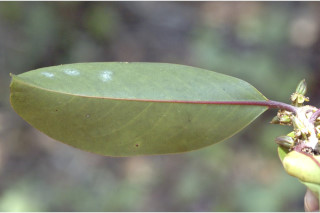
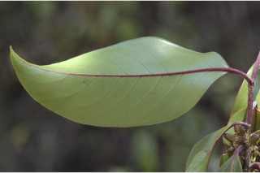
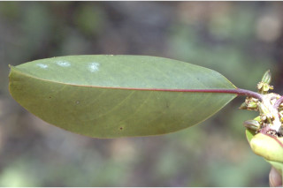
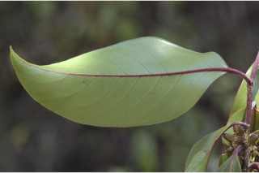
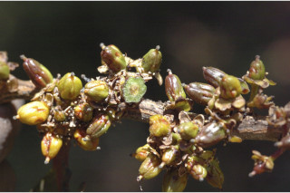
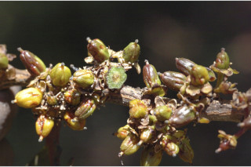

| Leaves : | Leaves simple , alternate , distichous ; stipule caducous and leaving scar ; petiole ca. 1.5 cm long, canaliculate , glabrous , reddish brown; lamina 7-19 x 3- 7.5 cm, elliptic-oblong or elliptic-lanceolate , apex obtusely short or long acuminate acumen twisted, base asymmetric or cuneate or attenuate , margin entire , shining above, glabrous , coriaceous , with pellucid transparent dots and lines, blackish green when dry; midrib raised above; secondary_nerves 10-12 pairs; tertiary_nerves broadly reticulate . |


 





 
